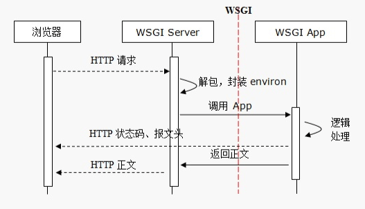
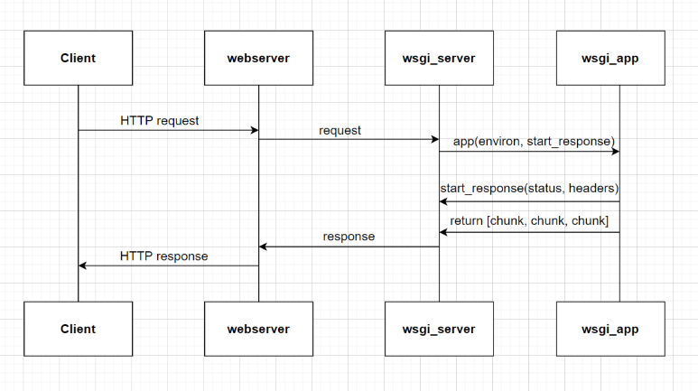

Python: WEB开发-HTTP协议与WSGI
- TAGS: Python
WEB开发
CS编程
CS编程，即客户端、服务器编程。
客户端、服务端之间需要使用Socket，约定协议、版本（往往使用的协议是TCP或者UDP），指定地址和端口，就可以通信了。
客户端、服务端传输数据，数据可以有一定的格式，双方必须先约定好。
BS编程
BS编程，即Browser、Server开发。
Browser浏览器，一种特殊的客户端，支持HTTP(s)协议，能够通过URL向服务端发起请求，等待服务端返回HTML等数据，并在浏览器内可视化展示的程序。
Server，支持HTTP(s)协议，能够接受众多客户端发起的HTTP协议请求，经过处理，将HTML等数据返回给浏览器。
本质上来说，BS是一种特殊的CS，即客户端必须是一种支持HTTP协议且能解析并渲染HTML的软件，服务端必须是能够接收多客户端HTTP访问的服务器软件。
HTTP协议底层基于TCP协议实现。
BS开发分为两端开发
- 客户端开发，或称前端开发。HTML、CSS、JavaScript等
- 服务端开发，Python有WSGI、Django、Flask、Tornado等
HTTP协议
安装httpd
可以安装httpd或nginx等服务端服务程序，通过浏览器访问，观察http协议
无状态，有连接和短连接
无连接：HTTP 1.1之前，都是一个请求一个连接，连接用完即刻断开，其实是无连接
- 有连接：是因为它基于TCP协议，是面向连接的，需要3次握手、4次断开。
- 短连接：而Tcp的连接创建销毁成本高，对服务器有很大的影响。所以，自Http 1.1开始，支持keep-alive，默认也开启，一个连接打开后，会保持一段时间（可设置），浏览器再访问该服务器就使用这个Tcp连接，减轻了服务器压力，提高了效率。
无状态：指的是服务器无法知道2次请求之间的联系，即使是前后2次同一个浏览器也没有任何数据能够判断出是同一个浏览器的请求。后来可以通过cookie、session来判断。
协议
Http协议是无状态协议。
同一个客户端的两次请求之间没有任何关系，从服务器端角度来说，它不知道这两个请求来自同一个客户端。
URL组成
URL可以说就是地址，uniform resource locator 统一资源定位符，每一个链接指向一个资源供客户端访问。
schema://host[:port#]/path/.../[;url-params][?query-string][#anchor] #解释 scheme 模式、协议 - http、ftp、https、file、mailto等等 host:port - www.python.org:80 ，80端口是默认端口可以不写。域名会使用DNS解析，域 名会解析成IP才能使用。实际上会对解析后返回的IP的TCP的80端口发起访问 /path/to/resource - path，指向资源的路径 ?key1=value1&key2=value2 - query string，查询字符串，问号用来和路径分开，后面key=value形式，且使用&符号分割 #anchor 锚点
例如，通过下面的URL访问网页
http://www.bing.com/pathon/index.html?id=5&name=python
访问静态资源时，通过上面这个URL访问的是网站的某路径下的index.html文件， 而这个文件对应磁盘上的真实的文件。就会从磁盘上读取这个文件，并把文件的 内容发回浏览器端。
HTTP消息
https://datatracker.ietf.org/doc/html/rfc7230#section-1.1
消息分为Request请求、Response响应
- Request：浏览器向服务器发起的请求
- 请求报文由Header消息报头、Body消息正文组成（可选）
- 请求报文第一行称为请求行
- Response：服务器对客户端请求的响应
- 响应报文由Header消息报头、Body消息正文组成（可选）
- 响应报头第一行称为状态行
- 每一行使用回车和换行符作为结尾
- 如果有Body部分，Header、Body之间留一行空行，也就是2次回车换行。
"http://www.example.com/hello.txt": Client request: GET /hello.txt HTTP/1.1 User-Agent: curl/7.16.3 libcurl/7.16.3 OpenSSL/0.9.7l zlib/1.2.3 Host: www.example.com Accept-Language: en, mi Server response: HTTP/1.1 200 OK Date: Mon, 27 Jul 2009 12:28:53 GMT Server: Apache Last-Modified: Wed, 22 Jul 2009 19:15:56 GMT ETag: "34aa387-d-1568eb00" Accept-Ranges: bytes Content-Length: 51 Vary: Accept-Encoding Content-Type: text/plain Hello World! My payload includes a trailing CRLF.
请求报文
请求消息行：请求方法Method 请求路径 协议版本CRLF
请求方法Method
| 方法 | 说明 |
| GET | 请求获取URL对应的资源 |
| POST | 提交数据至服务器端 |
| HEAD | 和GET类似，不过不返回响应报文的正文 |
常见传递信息的方式
GET方法使用Query String
http://www.bing.com/pathon/index.html?id=5&name=python&name=linux
通过查询字符串在URL中传递参数，而URL在请求报文的头部的第一行
POST方法提交数据
请求时提交的数据是在请求报文的正文Body部分
请求消息如下 POST /xxx/yyy?id=5&name=bing HTTP/1.1 HOST: 127.0.0.1:9999 content-length: 26 content-type: application/x-www-form-urlencoded age=5&weight=80&height=170
URL中本身就包含着信息
响应报文
响应消息行：协议版本 状态码 消息描述CRLF
status code状态码
状态码在响应头第一行
1xx 提示信息，表示请求已被成功接收，继续处理
2xx 表示正常响应
200 正常返回了网页内容
3xx 重定向
301 页面永久性移走，永久重定向。看Location, 返回新的URL，浏览器会根据返回的url发起新的request请求
302 临时重定向
304 资源未修改，浏览器使用本地缓存
4xx 客户端请求错误
404 Not Found，网页找不到，客户端请求的资源有错
400 请求语法错误
401 请求要求身份验证
403 服务器拒绝请求
5xx 服务器端错误
500 服务器内部错误
502 上游服务器错误，例如nginx反向代理的时候
Cookie技术
官方文档：Set-Cookie
- 键值对信息
- 是一种客户端、服务器端传递数据的技术
- 一般来说cookie信息是在服务器端生成，返回给浏览器端的
- 浏览器端可以保持这些值，浏览器对同一域发起每一请求时，都会把Cookie信息发给服务器端
- 服务端收到浏览器端发过来的Cookie，处理这些信息，可以用来判断这次请求是否和之前的请求有关联
曾经Cookie唯一在浏览器端存储数据的手段，目前浏览器端存储数据的方案很多，Cookie正在被淘汰。
当服务器收到HTTP请求时，服务器可以在响应头里面添加一个Set-Cookie键值对。 浏览器收到响应后通常会保存这些Cookie，之后对该服务器每一次请求中都通过 Cookie请求头部将Cookie信息发送给服务器。
另外，Cookie的过期时间、域、路径、有效期、适用站点都可以根据需要来指定。
可以使用 Set－Cookie: NAME=VALUE；Expires=DATE；Path=PATH；Domain=DOMAIN_NAME；SECURE
例如：
set-cookie:aliyungf_tc=xxxxw4Y; Path=/; HttpOnly set-cookie:test_cookie=CheckForPermission; expires=Tue, 19-Mar-2018 15:53:02 GMT; path=/; domain=.doubleclick.net Set-Cookie: BD_HOME=1; path=/
| key | value说明 |
|---|---|
| Cookie过期 | Cookie可以设定过期终止时间，过期后将被浏览器清除 |
| 如果缺省，Cookie不会持久化，浏览器关闭Cookie消失，称为会话级Cookie | |
| Cookie域 | 域确定有哪些域可以存取这个Cookie |
| 缺省设置属性值为当前主机，例如 www.python.org | |
| 如果设置为 python.org 表示包含子域 | |
| Path | 确定哪些目录及子目录访问可以使用该Cookie |
| Secure | 表示Cookie随着HTTPS加密过得请求发送给服务端 |
| 有些浏览器已经不允许 http:// 协议使用Secure | |
| 这个Secure不能保证Cookie是安全的，Cookie中不要传输敏感信息 | |
| HttpOnly | 将Cookie设置此标记，就不能被JavaScript访问，只能发给服务器端 |
查看Chrome浏览器f12，找到Application中Cookies。
Set-Cookie: id=a3fWa; Expires=Wed, 21 Oct 2015 07:28:00 GMT; Secure; HttpOnly 告诉浏览器端设置这个Cookie的键值对，有过期时间，使用HTTPS加密传输到服 务器端，且不能被浏览器中JS脚本访问该Cookie
Cookie的作用域：Domain和Path定义Cookie的作用域 Domain domain=www.baidu.com 表示只有该域的URL才能使用 domain=.baidu.com 表示可以包含子域，例如www.baidu.com 、python.baidu.com 等 Path path=/ 所有/的子路径可以使用 domain=www.baidu.com; path=/webapp 表示只有www.baidu.com/webapp下的URL匹配， 例如http://www.baidu.com/webapp/a.html就可以
缺点
- Cookie一般明文传输（Secure是加密传输），安全性极差，不要传输敏感数据
- 有4kB大小限制
- 每次请求中都会发送Cookie，增加了流量
Session技术
WEB 服务器端，尤其是动态网页服务端Server，有时需要知道浏览器方是谁，但是HTTP是无状态的，怎么办？
服务端会为每一次浏览器端第一次访问生成一个SessionID，用来唯一标识该浏览器，通过Set-Cookie发送到浏览器端。
浏览器端收到之后并不永久保持这个Cookie，只是会话级的。浏览器访问服务端时，会使用Cookie，也会带上这个SessionID的Cookie值。
Set-Cookie:JSESSIONID=741248A52EEB83DF182009912A4ABD86.Tomcat1; Path=/; HttpOnly
服务端会维持这个SessionID一段时间，如果超时，会清理这些超时没有人访问的SessionID。如果浏览器端发来的SessionID无法在服务端找到，就会自动再次分配新的SessionID，并通过Set-Cookie发送到浏览器端以覆盖原有的存在浏览器中的会话级的SessionID.
WSGI

WSGI（Web Server Gateway Interface）主要规定了服务器端和应用程序间的接口。
WEB Server主要负责HTTP协议请求和响应，但不一定支持WSGI接口访问。
WEBServer集成WSGI模块，比如NGINX.

start_response解决响应报文头，解决响应报文正文。
WSGI服务器–wsgiref
- wsgiref是Python提供的一个WSGI参考实现库，不适合生产环境使用
- wsgiref.simple_server 模块实现一个简单的WSGI HTTP服务器
# 返回文本例子 from wsgiref.simple_server import make_server,demo_app ip = '127.0.0.1' port = 9999 server = make_server(ip, port, demo_app) # demo_app应用程序，可调用 server.serve_forever() # server.handle_request() 执行一次
范例
from wsgiref.simple_server import make_server, demo_app # 1 TCP server HTTP bind listen ip, port; HTTP 应用层 文本 # 解析HTTP报文、封装Response报文 这样才能称为WEB HTTP Server # 2 WSGI 支持接口规范, ref 基于 HTTP Server server = make_server('127.0.0.1', 8080, demo_app) # socketserver 实现，一个请求就使用Handler类实例化对应一个请求。 handler方法处理请求，App? setup handle finish # handle 三样属性，socket对象、对端信息、server # server.application=app # app中需要准备内容，在return之前，需要使用start_response函数准备状态码和头的字段， # return 可迭代对象，元素是内容的一部分，元素是bytes类型 server.serve_forever()
执行结果
#浏览器访求127.0.0.1：8080端口 PS D:\project\pyproj\trae> & D:/py/py313/python.exe d:/project/pyproj/trae/t1.py 127.0.0.1 - - [21/May/2025 13:41:57] "GET / HTTP/1.1" 200 5386 127.0.0.1 - - [21/May/2025 13:41:57] "GET /favicon.ico HTTP/1.1" 200 5305
查看demo_app源码
def demo_app(environ,start_response): from io import StringIO stdout = StringIO() print("Hello world!", file=stdout) print(file=stdout) h = sorted(environ.items()) for k,v in h: print(k,'=',repr(v), file=stdout) start_response("200 OK", [('Content-Type','text/plain; charset=utf-8')]) return [stdout.getvalue().encode("utf-8")]
- StringIO 在内存中读写str
- print("Hello world!", file=stdout)
- 将Hello world!内容写入内存中
- start_response 构造head
- getvalue 把缓冲区的内容全部读取出来，内容必须为btyes
WSGI服务器作用
- 监听HTTP服务端口（TCPServer，默认端口80）
- 接收浏览器端的HTTP请求并解析封装成environ环境数据
- 负责调用应用程序，将environ数据和start_response方法两个实参传入给Application
- 将应用程序响应的正文封装成HTTP响应报文返回浏览器端
- 所有头和内容都是由server来封装
WSGI APP应用程序端
应用程序应该是一个可调用对象
Python中应该是函数、类、实现了 call 方法的类的实例
- 这个可调用对象应该接收两个参数
函数实现
from wsgiref.simple_server import make_server return_res = b'Hello World' def application(environ, start_response): start_response("200 OK", [('Content-Type', 'text/plain; charset=utf-8')]) return [return_res] ip = '127.0.0.1' port = 9999 server = make_server(ip, port, application) # demo_app应用程序，可调用 server.serve_forever() # server.handle_request() 执行一次
类实现
from wsgiref.simple_server import make_server return_res = b'Hello World' class Application: def __init__(self, environ, start_response): self.env = environ self.sr = start_response def __iter__(self): # 对象可迭代 self.sr("200 OK", [('Content-Type', 'text/plain; charset=utf-8')]) #return iter(['一切'.encode()]) #yield from ['一切'.encode()] yield return_res ip = '127.0.0.1' port = 9999 server = make_server(ip, port, Application) # Demo_app应用程序，可调用 server.serve_forever() # server.handle_request() 执行一次
类实现，可调用对象
from wsgiref.simple_server import make_server return_res = b'Hello World' class Application: def __call__(self, environ, start_response): start_response("200 OK", [('Content-Type', 'text/plain; charset=utf-8')]) return [return_res] ip = '127.0.0.1' port = 9999 server = make_server(ip, port, Application()) # Application(e,s) server.serve_forever() # server.handle_request() 执行一次
- environ和start_response这两个参数名可以是任何合法名，但是一般默认都是这2个名字
- 应用程序端还有些其他的规定，暂不用关心
注意：第2、第3种实现调用时的不同
自定义 返回头
一般自定义习惯用‘X’开头
from wsgiref.simple_server import make_server return_res = b'Hello World' class Application: def __call__(self, environ, start_response): start_response("200 OK", [ ('Content-Type', 'text/plain; charset=utf-8'), ('X-Server', 'MyDemo_app') ]) return [return_res] ip = '127.0.0.1' port = 9999 server = make_server(ip, port, Application()) # Application应用程序，可调用 server.serve_forever() # server.handle_request() 执行一次
environ
environ是包含Http请求信息的dict字典对象
| 名称 | 含义 |
| REQUEST_METHOD | 请求方法，GET、POST等 |
| PATH_INFO | URL中的路径部分 |
| QUERY_STRING | 查询字符串 |
| SERVER_NAME,SERVER_PORT | 服务器名、端口 |
| HTTP_HOST | 地址和端口 |
| SERVER_PROTOCOL | 协议 |
| HTTP_USER_AGENT | UserAgent信息 |
CONTENT_TYPE = 'text/plain' HTTP_HOST = '127.0.0.1:9999' HTTP_USER_AGENT = 'Mozilla/5.0 (Windows; U; Windows NT 6.1; zh-CN) AppleWebKit/537.36 (KHTML, like Gecko) Version/5.0.1 Safari/537.36' PATH_INFO = '/' QUERY_STRING = '' REMOTE_ADDR = '127.0.0.1' REMOTE_HOST = '' REQUEST_METHOD = 'GET' SERVER_NAME = 'DESKTOP-D34H5HF' SERVER_PORT = '9999' SERVER_PROTOCOL = 'HTTP/1.1' SERVER_SOFTWARE = 'WSGIServer/0.2'
打印environ信息
from wsgiref.simple_server import make_server return_res = '你好' def application(environ, start_response): print(*environ.items(), sep='\n') start_response("200 OK", [('Content-Type', 'text/plain; charset=utf-8')]) return [return_res.encode('utf-8')] ip = '127.0.0.1' port = 9999 server = make_server(ip, port, application) # demo_app应用程序，可调用 server.serve_forever() # server.handle_request() 执行一次
start_response
它是一个可调用对象。有3个参数，定义如下：
start_response(status, response_headers, exc_info=None)
| 参数名称 | 说明 |
| status | 状态码和状态描述，例如 200 OK |
| response_headers | 一个元素为二元组的列表 |
| 例如[('Content-Type', 'text/plain;charset=utf-8')] | |
| exc_info | 在错误处理的时候使用 |
start_response应该在返回可迭代对象之前调用，因为它返回的是Response Header。返回的可迭代对象是Response Body
服务器端
服务器程序需要调用符合上述定义的可调用对象APP，传入environ、start_response，APP处理后，返回响应头和可迭代对象的正文，由服务器封装返回浏览器端
返回网页的例子
from wsgiref.simple_server import make_server def application(environ, start_response): status = '200 OK' headers = [('Content-Type', 'text/html;charset=utf-8')] start_response(status, headers) # 返回可迭代对象 html = '<h1>Hello World</h1>'.encode("utf-8") return [html] ip = '127.0.0.1' port = 9999 server = make_server(ip, port, application) server.serve_forever() # server.handle_request() 执行一次
simple_server 只是参考用，不能用于生产环境
Linux 测试用命令
curl -I http://192.168.142.1:9999/xxx?id=5 curl -X POST http://192.168.142.1:9999/yyy -d '{"x":2}' -I 使用HEAD方法 -X 指定方法，-d传输数据
到这里就完成了一个简单的WEB 程序开发
WSGI WEB服务器
本质上就是一个TCP服务器，监听在特定端口上
支持HTTP协议，能够将HTTP请求报文进行解析，能够把响应数据进行HTTP协议的报文封装并返回浏览器端
实现了WSGI协议，该协议约定了和应用程序之间接口（参看PEP333，https://www.python.org/dev/peps/pep-0333/ ）
WSGI APP应用程序
- 遵从WSGI协议
- 本身是一个可调用对象
- 调用start_response，返回响应头部
- 返回包含正文的可迭代对象
WSGI 框架库往往可以看做增强的更加复杂的Application